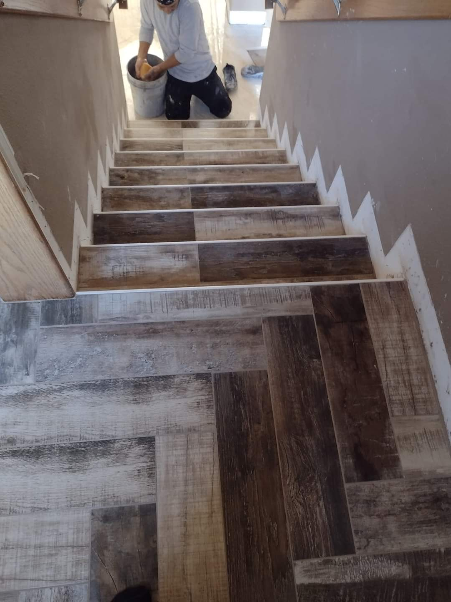

Investigación sobre Bienestar Emocional y Rendimiento Académico
En esta investigación, exploramos la intrincada relación entre el bienestar emocional y el desempeño académico de los estudiantes de ingeniería de la UNMSM. Nuestro objetivo es desentrañar los misterios detrás de estos dos aspectos vitales y cómo pueden influenciarse mutuamente.
- Realizamos un exhaustivo análisis de los datos recopilados empleando rigurosas técnicas de regresión lineal simple.
- Presentamos descubrimientos significativos respaldados por gráficos detallados y un análisis minucioso.
- Los frutos de nuestra investigación prometen beneficios tangibles para estudiantes, profesionales de la salud mental y expertos en psicología.
Te invitamos a adentrarte en los detalles de nuestro estudio y explorar las posibles implicaciones que tiene para la comunidad universitaria.